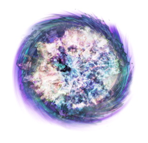

- 
text
Со́лнце (астр. ☉) — единственная звезда Солнечной системы. Вокруг Солнца обращаются другие объекты этой системы: планеты и их спутники, карликовые планеты и их спутники, астероиды, метеориты, кометы и космическая пыль. Масса Солнца составляет 99,866 % от суммарной массы всей Солнечной системы.
Мерку́рий — самая близкая к Солнцу планета Солнечной системы[12], обращающаяся вокруг Солнца за 88 земных суток. Продолжительность одних звёздных суток на Меркурии составляет 58,65 земных[13], а солнечных — 176 земных
Вене́ра — вторая внутренняя планета Солнечной системы[6] с периодом обращения в 224,7 земных суток. Названа именем Венеры, богини любви из римского пантеона[7]. Это единственная из восьми основных планет Солнечной системы, получившая название в честь женского божества.